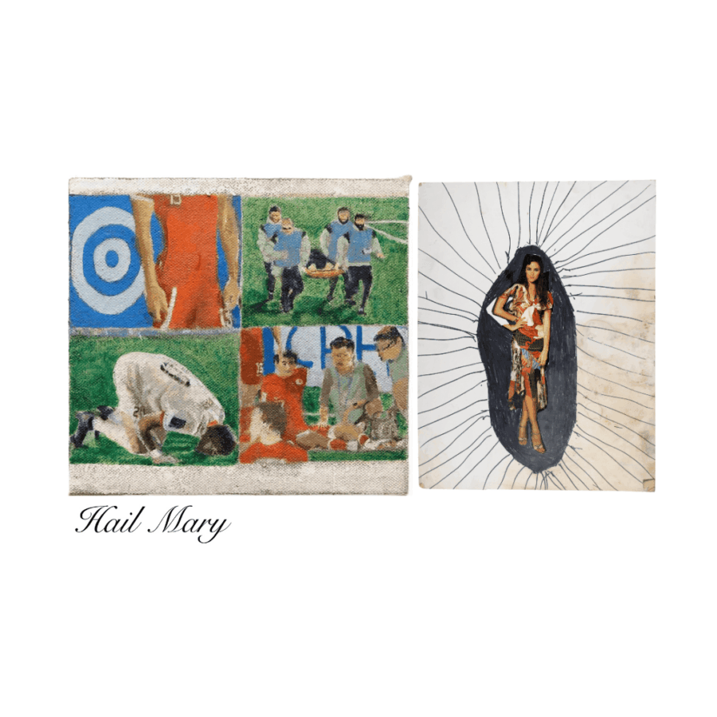

Hail Mary Closing Reception
Hail Mary
Circle Contemporary- West Town
November 21, 2025 – January 9, 2026
Omar Abulsheikh – Marcelo Aguilar – Renata Berdes – Veronica Cuculich – Danny Frownfelter – Amanda Gantner – Ted Gram-Boarini – Michelle Grabner – Ellen Hanson – Stefan Harhaj – Anna Horvath – Aaron Kleeblatt – Rebecca Kubica – Harry Kuttner – Christianne Msall – Ed Oh – Paul Pfeiffer –Andrew Sloan – Tim Stone – Candace Turner – Mary Eleanor Wallace – Maria Vanik
Arts of Life is pleased to announce our next exhibition Hail Mary, guest curated by Margaret Crowleyand Tim Callahan.
Hail Mary is an exhibition about sport. It examines the complexity and inherent spirituality of participating, watching and being a fan of any sport.
James Naismith’s Guiding Principles of Basket-Ball, 1891 (Glossed by Dave Hickey)
1) There must be a ball; it should be large. (This in prescient expectation of Connie Hawkins and Julius Erving, whose hands would reinvent basketball as profoundly as Jimi Hendrix’s hands reinvented rock-and-roll.)